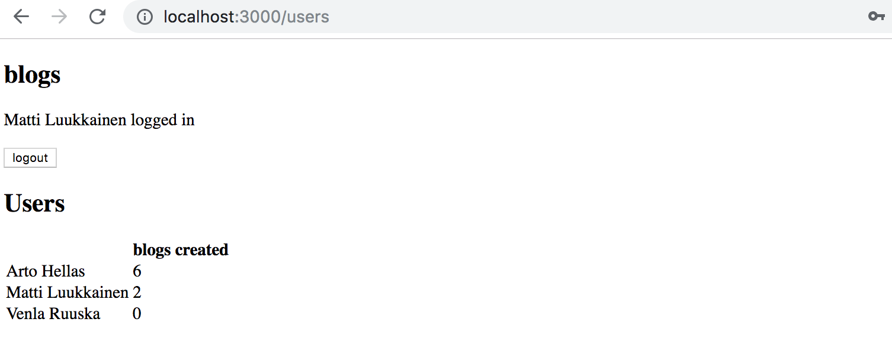
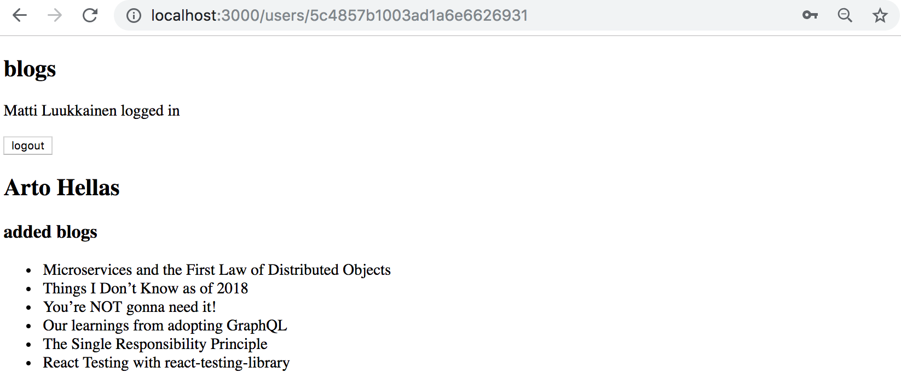
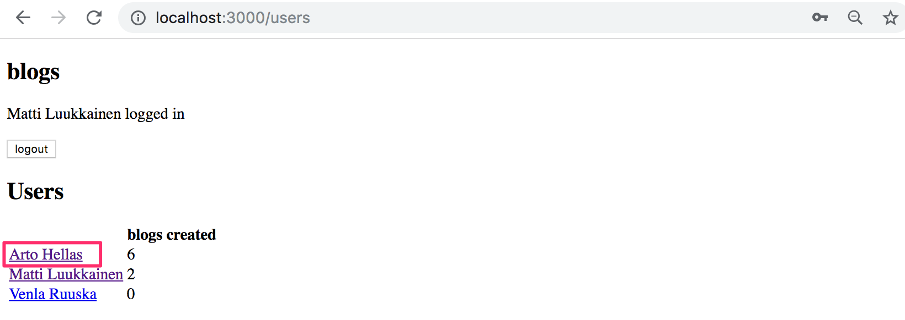
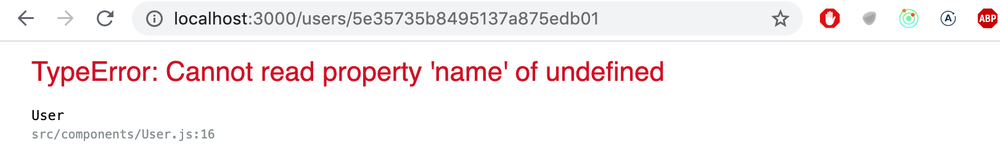
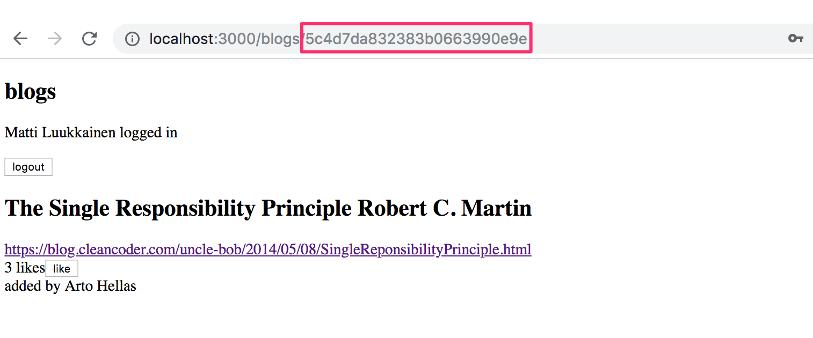
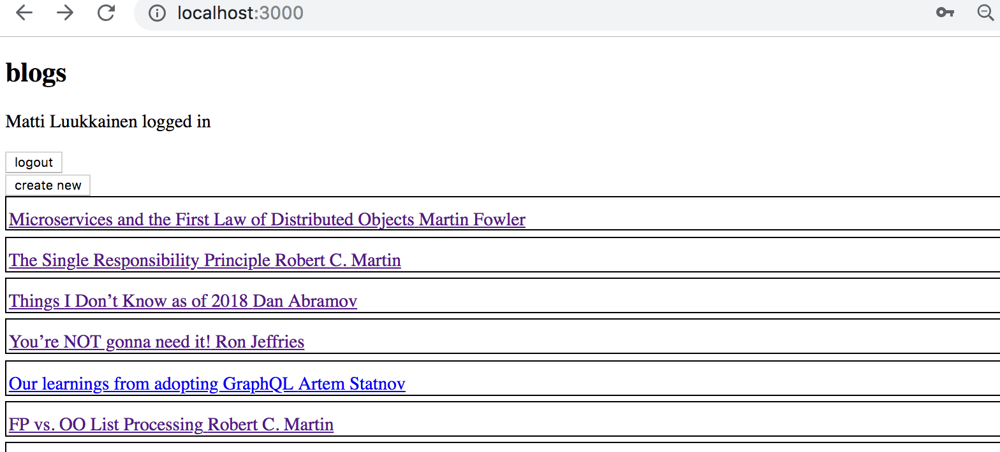
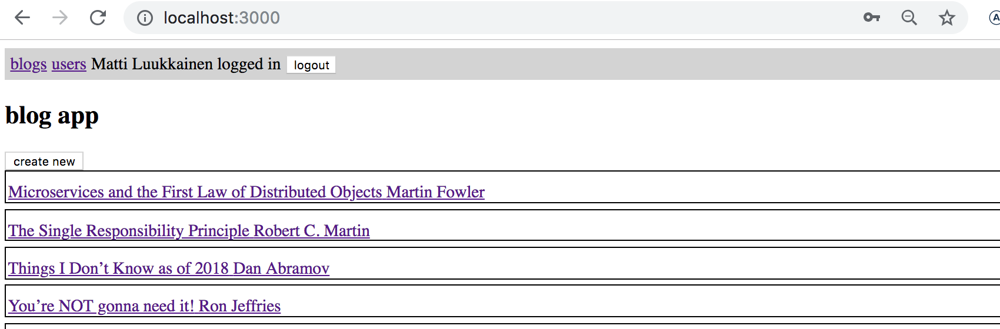
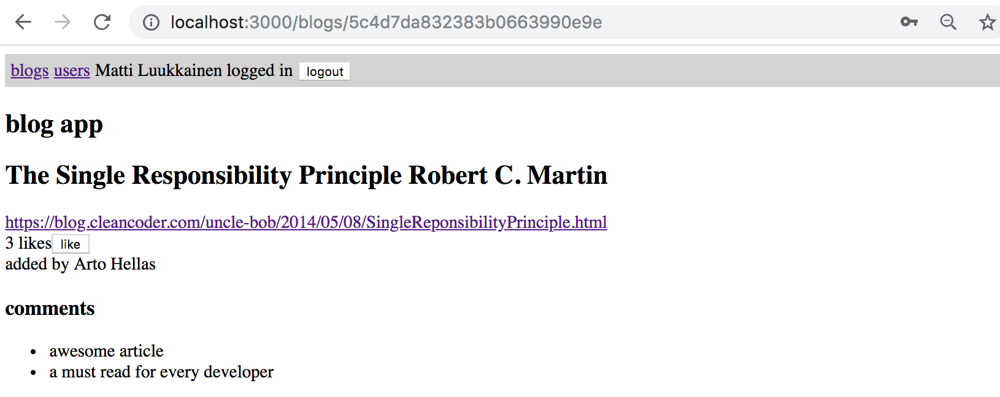
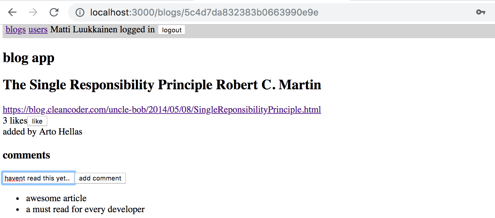

除了本教材第七章节的React路由器和自定义钩子部分的八个练习外，还有13个练习，继续我们在第四和第五章节教材中进行的Bloglist应用的工作。下面的一些练习是相互独立的 "功能"，意味着不需要按照任何特定的顺序完成练习。如果你想跳过一部分练习，你可以自由选择。
如果你不想使用你自己的Bloglist应用，你可以自由地使用模型解决方案的代码作为这些练习的起点。
这部分教材中的许多练习都需要对现有代码进行重构。这是扩展现有应用的一个常见的现实，这意味着重构是一个重要和必要的技能，即使它有时会感到困难和不愉快。
对于重构和编写新代码，一个很好的建议是采取小步快跑。如果你在重构时让应用长时间处于完全崩溃的状态，几乎可以保证失去理智。
Exercises 7.9.-7.21.
7.9: automatic code formatting
在前面的部分中，我们使用ESLint来确保代码遵循定义的惯例。 Prettier是另一种相同的方法。根据文档，Prettier是一个有意见的代码格式化器，也就是说，Prettier不仅控制代码风格，而且还根据定义格式化代码。
Prettier很容易集成到代码编辑器中，所以当代码被保存时，它将自动被正确地格式化。
拿着Prettier在你的应用中使用，并配置它与你的编辑器一起工作。
7.10: redux, step1
重构应用，从使用内部React组件的状态到使用Redux进行应用的状态管理。
在练习集的这一点上将应用的通知改为使用Redux。
7.11: redux, step2
Note that this and the next two exercises are quite laborious but incredibly educational.
将博客文章的信息存储在Redux商店中。在这个练习中，只要你能在后端看到博客并创建一个新的博客就足够了。
你可以通过使用React组件的内部状态来自由管理登录和创建新博客文章的状态。
7.12: redux, step3
扩展你的解决方案，这样又可以喜欢和删除一个博客。
7.13: redux, step4
在Redux商店中存储登录用户的信息。
7.14: Users view
为应用实现一个视图，显示所有与用户相关的基本信息。

7.15: Individual user view
为单个用户实现一个视图，显示该用户添加的所有博客文章。

你可以通过点击列出所有用户的视图中的用户名称来访问该视图。

NB: you will almost certainly stumble across the following error message during this exercise:

如果你刷新单个用户的页面，会出现错误信息。
这个问题的原因是，当我们直接导航到单个用户的页面时，React应用还没有从后端收到数据。解决这个问题的一个办法是使用条件渲染。
const User = () => {
const user = ...
// highlight-start
if (!user) {
return null
}
// highlight-end
return (
<div>
// ...
</div>
)
}
7.16: Blog view
为博客文章实现一个单独的视图。你可以按照下面的例子来模拟你的视图的布局。

用户应该能够通过点击列出所有博文的视图中的博文名称来访问该视图。

在你完成这个练习后，练习5.7中实现的功能就不再需要了。点击一个博客文章不再需要在列表中展开该项目并显示该博客文章的细节。
7.17: Navigation
为应用实现一个导航菜单。

7.18: comments, step1
实现对博客文章发表评论的功能。

评论应该是匿名的，也就是说，它们与留下评论的用户没有关联。
在这个练习中，前端只显示应用从后端收到的评论就足够了。
为博客文章添加评论的适当机制是向api/blogs/:id/comments端点发出HTTP POST请求。
7.19: comments, step2
扩展你的应用，使用户可以从前端向博客文章添加评论。

7.20: Styles, step1
通过应用教材中显示的方法之一来改善你的应用的外观。
7.21: Styles, step2
如果你用一个小时或更多的时间来设计你的应用的风格，你可以把这个练习标记为完成。
这是这部分课程的最后一个练习，是时候把你的代码推送到GitHub，并把你所有完成的练习标记到练习提交系统。